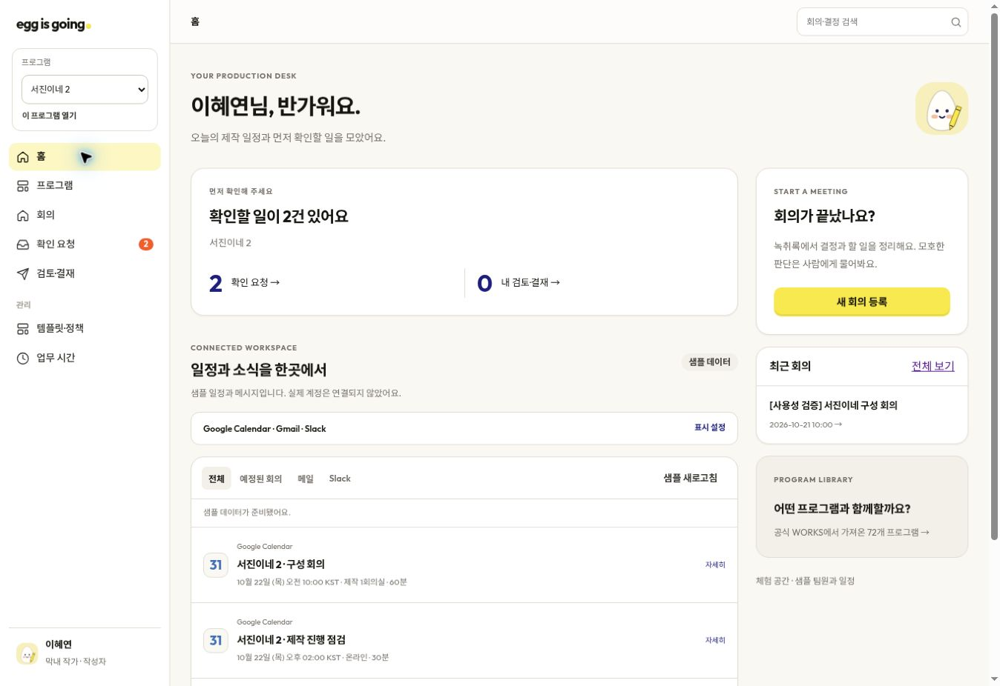

화면 9종, 디자인 원칙, 에이전트 실행 계약을 실제 코드와 대조했습니다. 아래에서 이번에 고친 부분과 남은 부분을 구분합니다.
| 기획 | 기존 차이 | 이번 수정 / 남은 범위 |
|---|---|---|
| 홈·S1 회의 목록 | 홈 없음, 검색 없음, 프로그램 1개 고정, 전체 데이터 조회 | 홈·예정 회의·소식·우선 확인·최근 회의 추가. 회의 제목·안건·업무 검색, 실행 상태 필터, 검색 결과 없음·초기화. 프로그램별 목록과 통계 조회. |
| S2 회의 등록 | 텍스트 전용, 동일 프로필, 파일 제한·시간대 표기 부족 | 직급별 캐릭터 7종, 일정에서 제목·일시 불러오기, 한국 시간 표시, 참석자·파일·제목·일시 검증 보강. 음성 업로드·STT·청크 처리는 미구현. 에이전트 가이드는 MVP 텍스트 입력을 허용함. |
| S3 실행 상태 | 진단 키·모의 제공자 이름·실행 정책을 일반 사용자에게 노출 | 상태와 다음 행동 중심으로 문구 수정. 상세 입력은 접기, 진단 오류는 운영자만 표시. 다른 회의의 run 쿼리 접근 차단. 외부 요청의 불확실 결과 조회·내구성 작업자는 미구현. |
| S4 작업실 | 원문 검색 없음. 기획의 4개 탭 대신 안건·업무 2탭. | 발언·화자 검색과 결과 수·해제 추가, 선택 항목 근거는 함께 유지. 파형·오디오 재생·원문 본문 직접 정정은 미구현. 아이디어 변화는 항목 상세에 포함. |
| S5 사람 확인 | 대기·응답 이력과 근거 존재. 조회 범위가 전역. | 프로그램별 요청 조회, 권한 있는 요청 상세만 접근, 운영자 목록에 질문 내용 미노출. 필수 응답·고정·하위 실행 동작 유지. |
| S6 문서 검토 | 문서·버전·검증 존재. 과거 문서에도 최신 실행의 검증을 표시하는 한계. | 문구 정리, 상태·상신·다운로드 유지. 검증 결과를 문서 버전에 정확히 결합하는 추적, 모든 검증 항목의 근거 클릭 연결은 후속 필요. |
| S7 검토·결재 | 전체 문서 차이 표시. 기획의 ‘변경된 줄 우선’ 전용 보기 없음. | 검토 기록 캐릭터, 설명 문구 정리, 프로그램별 요청 조회. 변경 줄만 보기·필터는 후속 필요. |
| S8 템플릿·정책 | JSON 직접 입력, 저장과 승인이 한 동작. | 항목 이름·출처·형식·열·기준·필수·순서 편집 UI 추가. 서버 계약 검증, 다른 프로그램 양식·승인본 변경 차단. 초안→미리보기→별도 승인 흐름과 의존성 기반 영향 분석은 후속 필요. |
| S9 측정 | 사람·AI·검토 시간 분리 존재. 평균 중심. | 업무 시간으로 이름 변경, 프로그램별 집계. 중앙값·분포·기준선 출처·CSV 내보내기는 후속 필요. |
| 항목 | 판단 |
|---|---|
| 브랜드 토큰 | 크림·노랑·블루베리, Outfit/Noto Sans KR, 선 아이콘과 상태 칩/문서 배지 구분은 유지. |
| 로딩 | 기존 일반 원형 스피너를 평면 달걀 흔들림으로 변경. 첨부에는 정확한 스피너 모션이 없으므로 ‘로딩에는 작은 평면 달걀’ 원칙에서 파생. 버튼·링크·화면 이동·상태 갱신에 적용, 동작 줄이기 설정 지원. |
| 프로필 | 직급별 7종 달걀 캐릭터. 메인/서브/막내 작가, 메인/서브/막내 PD, 운영 담당의 안경·노트·연필·헤드셋·모자·슬레이트·고글을 구분. 원본 ‘캐릭터는 빈 화면·로딩·완료에만’ 규칙을 사용자 요청에 따라 프로필 용도로 확장. |
| 문구 | ‘SSO로 교체’, 입력 해시·내부 키·개발 설명을 주 흐름에서 제거. 사용자 행동·결과·복구 방법을 표시. 샘플/실제 연결 여부는 짧은 상태로 유지. |
| 프로그램 카드 | 공식 포스터를 복제하지 않고 자체 타이포그래피 카드 사용. 이름·연도만 공식 WORKS에서 확인. |
| 가이드 | 현재 구현과 차이 |
|---|---|
| A1–A5 + 출력 도구 | 전사→맥락→결정→구성→출력→검증 6단계. 전사는 텍스트 파서, 출력은 docx 규칙 코드. 음성 API는 없음. 맥락·결정·구성·검증의 계약과 프롬프트 존재. |
| JSON 계약·근거·사람 확인 | AJV 계약 검사, segment 근거, 미정 값, 질문 생성, 응답 고정, 영향 단계부터 재실행 존재. mock 기반 결과가 실모델의 품질을 증명하지는 않음. |
| 모델·AIR Studio | 현재 배포는 mock. Anthropic 제공자 코드는 있으나 실제 모델 호출 검증은 안 됨. AIR Studio는 어댑터 인터페이스만 존재. 가이드도 AIR의 미확정 API 직접 호출을 요구하지 않음. |
| 실행 내구성 | Vercel 응답 뒤 after()에서 실행하여 등록 응답 대기 감소. 영속 큐·프로세스 중단 복구·외부 요청 결과 조회는 미구현. |
| 가이드 완료 기준 | 모의 회귀 19개 중 17 통과·2 실패: context/02_reversal의 ‘일몰’ 변경 이유 누락, decision/05_overlap의 폐기 판단 누락. 이번 UI 수정에서 에이전트 판단 규칙은 바꾸지 않음. 모든 가이드 완료 기준 충족으로 표시하면 안 됨. |
공식 WORKS의 연도 필터를 직접 확인하여 2019~2026년 프로그램 72개를 수록했습니다. 자동 수집 스케줄은 없습니다. 기존 가상 프로그램도 남겨 기존 회의를 보존합니다. 카탈로그 동기화 스크립트는 기존 프로그램·회의를 삭제하지 않고 동일 샘플 팀의 업무 공간과 기본 양식만 추가합니다.
홈의 Calendar/Gmail/Slack은 읽기 전용 샘플 어댑터입니다. 표시 켜기·끄기·소스 필터·상세 펼치기·일정으로 회의 준비·샘플 확인 시각이 동작합니다. 실제 MCP 서버, OAuth 인증, Google/Slack 계정 데이터 조회는 구현하지 않았습니다. 연결된 ChatGPT 계정의 비공개 데이터를 이 공동 체험 앱에 복사하지 않았습니다.
타입 검사와 프로덕션 빌드. 신규 계약 검증: 유효한 양식, 잘못된/중복 필드 차단, 72개 카탈로그 고유성, UTC 날짜 경계의 한국 일정과 입력값 전달. 브라우저에서 홈·소스 필터·표시 해제 후 새로고침 유지·카탈로그 복합 검색·프로그램 전환·일정 정보 불러오기·회의 생성·원문 검색·문서 검토·docx 다운로드를 확인했습니다. 서진이네 2의 새 회의는 참석 6명으로 등록되었고 샘플 분석 약 1초, 사람 확인 2건, 초안 v1이 생성되었습니다. 내려받은 docx 8,999바이트를 ZIP/XML로 검사하여 제목·결정·후속 업무를 확인했습니다. 샘플 선택 시 체크박스 갱신 누락과 검색 시 전체 건수가 바뀌는 오류도 수정 후 재확인했습니다. 관리자 양식 순서 변경·원상 복구를 확인했으며 테스트 과정에서 기존 양식은 저장·변경하지 않았습니다. 최종 코드 배포는 1bd6f99 / production / READY입니다.

고객사 홈페이지(index.html)의 흰 바탕·강한 검정 타이포·입체 달걀 오브젝트를 참고했습니다. 사용자의 새 지시에 따라 기존 평면 프로필 규칙을 3D 프로필 7종으로 변경했습니다. 생성 방식·최종 프롬프트·저장 경로는 브랜드 에셋 기록에 있습니다. 투명 WebP 7개 합계 약 100KB이며 로그인·프로필·홈 제작팀 장면·빈 화면에서 사용합니다.
상단 프로그램 선택과 좌측 프로그램 메뉴가 같은 우측 팝업을 엽니다. 공식 WORKS 썸네일 72개·검색·연도 필터·현재 프로그램 표시·선택 즉시 전환·Escape/바깥 클릭 닫기·닫은 후 초점 복귀를 지원합니다. 모바일은 화면 안의 대화상자로 표시됩니다. 공식 썸네일은 원본 이미지 주소를 사용하므로 원본 제공처의 변경에 영향을 받을 수 있으며 로딩 실패 시 이름으로 대체합니다. 목록 화면에도 같은 썸네일을 적용했습니다.
Calendar/Gmail/Slack은 색상 로고가 있는 선택 카드와 상태 체크로 바꿨습니다. 실제 계정 연결이 아닌 샘플 표시라는 구분은 유지합니다.